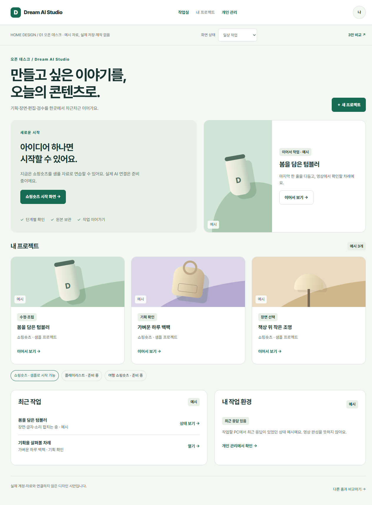

메인 홈만, 새롭게 세 가지
첫 화면에서
무엇을 가장 먼저 할까요?
새로 시작하기, 진행하던 제작에 집중하기, 쌓인 작업을 살펴보기. 같은 서비스의 홈을 세 가지 구조로 비교해 보세요.
직접 눌러 볼 수 있는 홈 시안입니다.
자료는 모두 예시이며 실제 저장·로그인·영상 생성은 실행하지 않습니다. 각 안의 ‘화면 상태’에서 읽는 중·빈 목록·오류·처리기·온라인 준비 상황을 바꿀 수 있습니다.


같은 정보, 다른 우선순위
01 · 시작하기 쉬움
처음 방문했을 때 가능한 작업과 다음 행동이 분명합니다. 프로젝트가 아주 많아지면 목록 정리가 더 필요합니다.
02 · 진행 작업에 집중
제작을 자주 이어 하는 사람에게 빠릅니다. 휴대폰에서는 선택 작업과 상태 패널을 세로로 읽어야 합니다.
03 · 작업을 읽고 고르기
브랜드와 작업 내용을 차분하게 보여 줍니다. 빠르게 새 작업만 시작하려는 사람에게는 첫 화면이 길게 느껴질 수 있습니다.
추천은 01 오픈 데스크
서비스가 제공하는 가치, 지금 시작할 수 있는 작업, 이어 할 프로젝트가 균형 있게 보입니다. 처음 쓰는 사용자와 현재 온라인 준비 상태에도 설명을 자연스럽게 담을 수 있습니다. 반복 제작이 중심이면02, 브랜드와 작업 기록의 분위기를 우선하면03을 비교해 보세요.